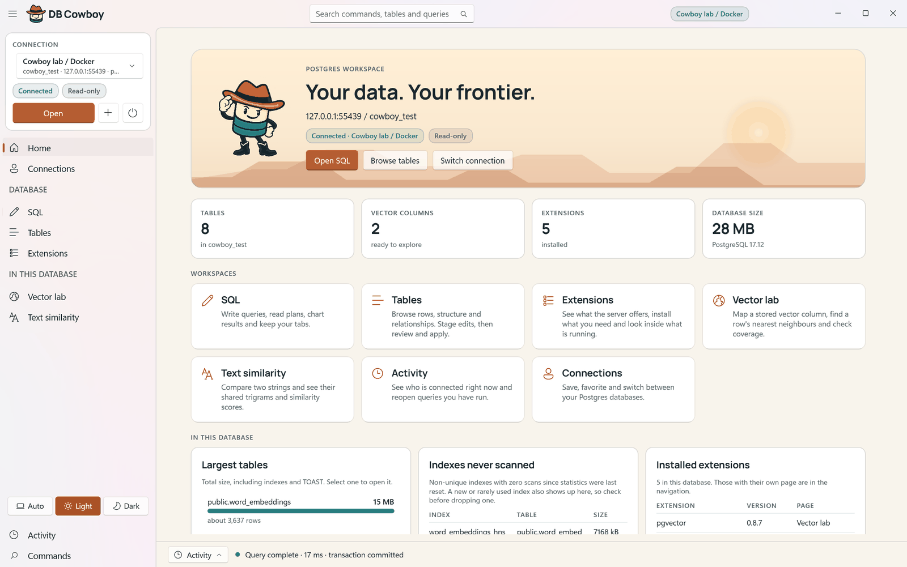
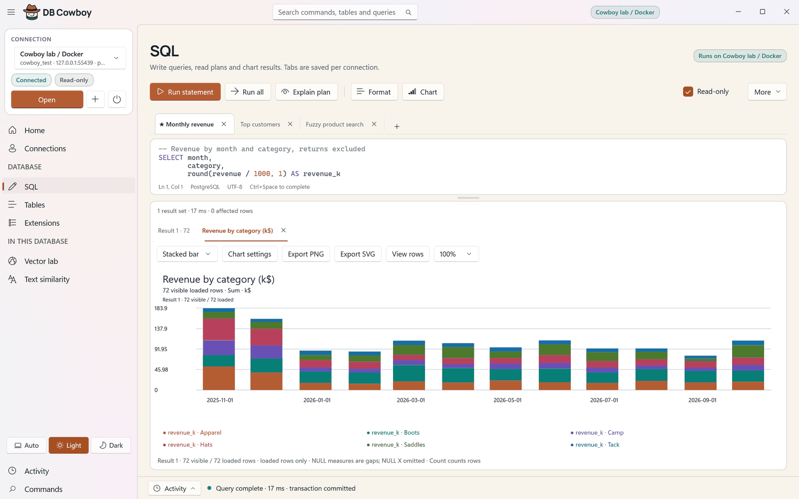
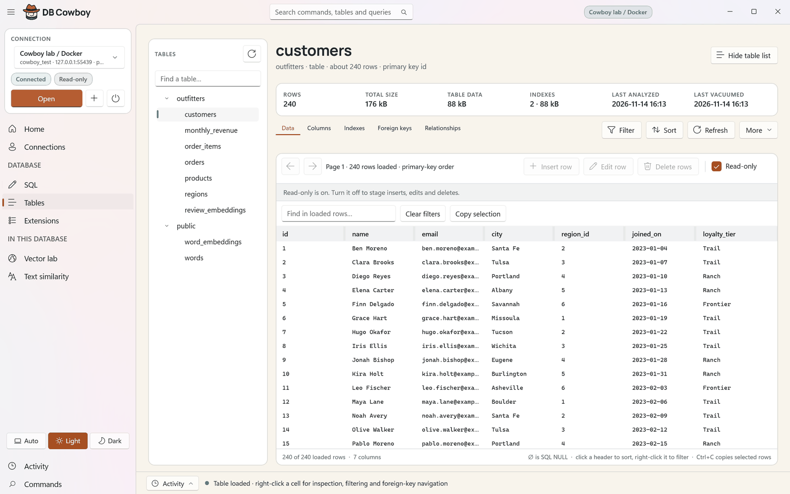
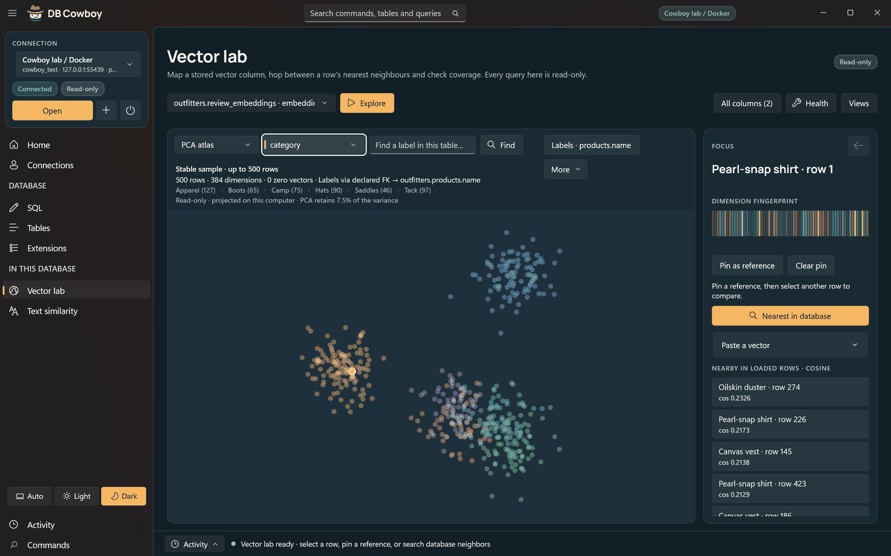

Postgres workspace for Windows
Your data. Your frontier.
DB Cowboy is a native Windows app for PostgreSQL: write and chart SQL, browse and safely edit tables, manage extensions and explore pgvector embeddings, all on your own machine.
Version 0.43.1 · Installer 81 MB · ZIP 95 MB · Windows x64 · Free

Features
Everything you reach for, one native window
-
SQL that keeps up
Tabbed queries saved per connection, completion from your schema, formatting, EXPLAIN plans, snippets and history.
-
Charts from any result
Bar, stacked, line, area, scatter, donut or a single big number, saved with the query and exportable as PNG or SVG.
-
Tables, edited safely
Rows, columns, indexes, foreign keys and a relationship diagram. Edits are staged and applied in one transaction after you review them.
-
Read-only by default
New connections start read-only. Turn it off and each run still asks first. Passwords are protected with Windows data protection.
-
Extensions, explained
See what the server offers, install or update with the exact statement shown first. pg_trgm, pg_stat_statements, PostGIS, pg_cron and others get their own pages.
-
Vector lab for pgvector
Map stored embeddings as a constellation, PCA atlas or similarity matrix, find exact nearest rows and check index recall. It reads the embeddings already in your database.
Screenshots
A closer look



Download
Saddle up
DB Cowboy 0.43.1 for Windows x64. Free to use.
Installer 81 MB · ZIP 95 MB · All releases
- Requirements
- Windows 11, x64. The portable ZIP also runs on Windows 10 version 2004 or later. A PostgreSQL server to connect to: local, Docker or remote.
- Installer or portable
- The installer sets up DB Cowboy for your account without admin rights. The ZIP runs from any folder; add an empty
portable.flagbesideDbCowboy.exeto keep settings next to it. - First run
- Builds are not code-signed, so Windows SmartScreen may warn you. Choose More info → Run anyway.
- Checksums
- SHA-256 files are attached to each release.